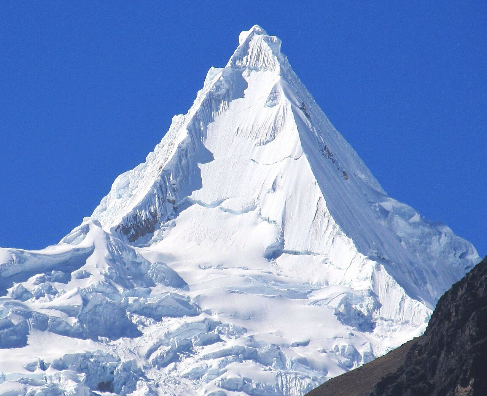
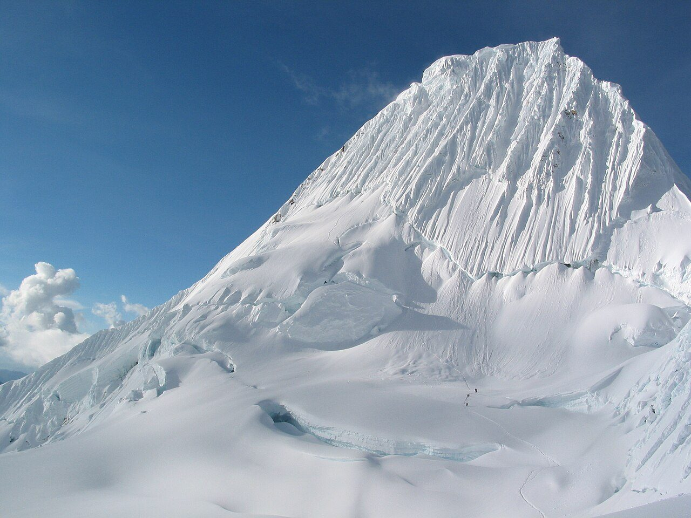
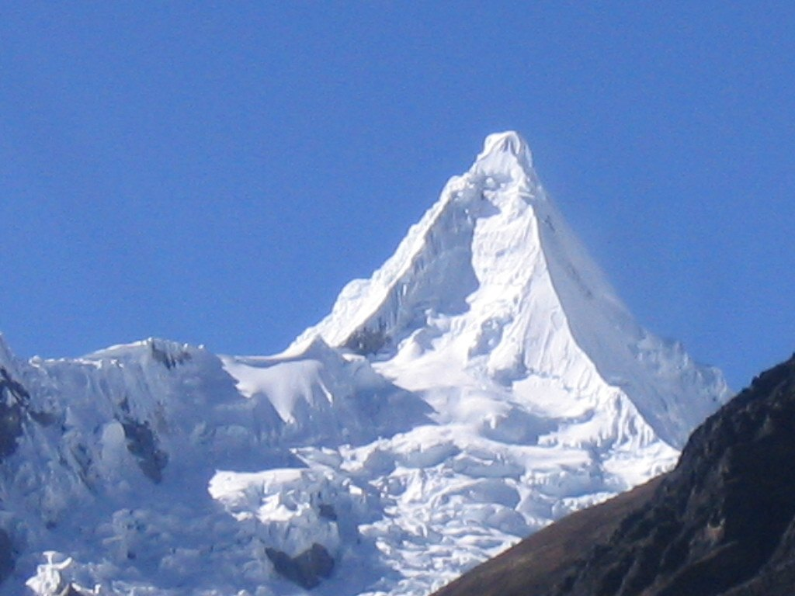
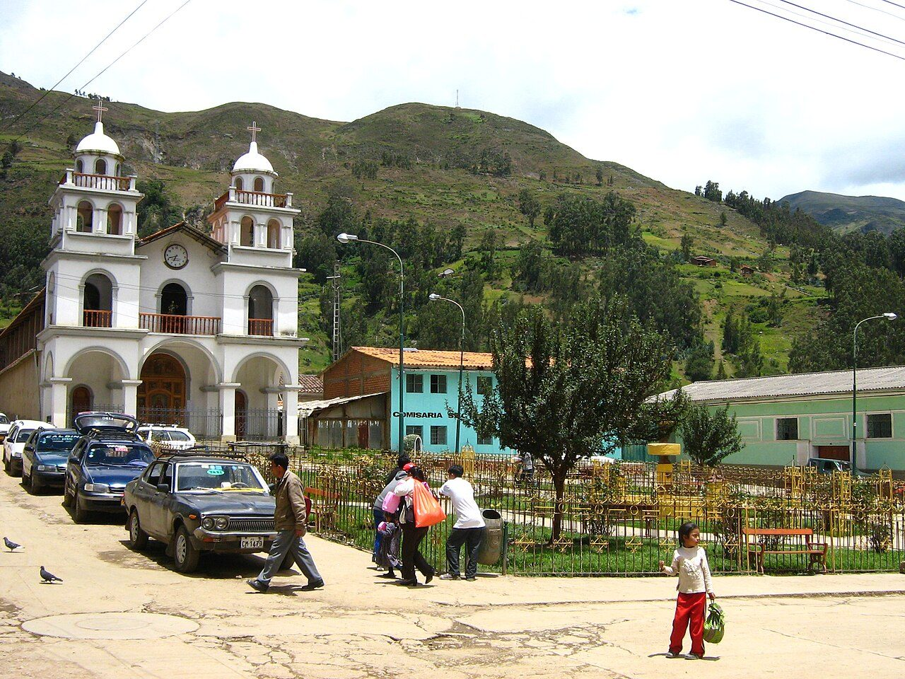

Alpamayo Circuit
Circle the world's most beautiful mountain through Peru's Cordillera Blanca.
Alpamayo Circuit runs 64 km through Peru and finishes at Pomabamba. It starts at Hualcayán. Your ordinary week counts toward all of it: at 5,000 steps a day that's about 3 weeks, with no flights and no leave. Below are the 11 places you pass, each with its photograph and its story.
- 64km end to end
- 11landmarks
- 3 weeksat 5,000 steps a day
- Pomabambafinishes at

The landmarks of Alpamayo Circuit
11 landmarks, in walking order. Each photograph is by the person credited beneath it, used as they licensed it.
-
Hualcayán
Dust and eucalyptus smoke hang over Hualcayán at 3,140 metres, the last road-head on the western wall. Arrieros cinch loads onto donkeys while the animals stamp and blow. Above the terraced potato fields the Cordillera Blanca stands up in one unbroken white barrier, and the only way through it is on foot. The climb starts at the edge of the last field.
-
Huishcash
Four thousand three hundred metres, and the valley floor is already a green thread far below. Huishcash is a shelf of cropped turf with water running through it, reached by a climb that takes most of a day. Cushion plants grip the stones. The air has thinned enough that boiling water goes lukewarm, and the cold arrives the moment the sun leaves the ridge.
-

Photo: Frank R 1981 · Wikimedia Commons, CC BY-SA 4.0 Osoruri
Over the Osoruri saddle at 4,860 metres the trail drops into a hanging valley of tarns and cushion plants. The camp sits in a bowl below the pass, wind funnelling through by afternoon. Vicuña graze the far slope, delicate and wary. Nothing lies here but grass, stone and water, and no road has come within a day's walk since Hualcayán.
-

Photo: Brad MeringBaltimore, MD, United States · Wikimedia Commons, Copyrighted free use Vientunan Pass
Thin, sharp air marks the Vientunan pass at 4,770 metres. From the crest the whole northern Cordillera Blanca unrolls: peak after glaciated peak marching to the horizon. A cairn hung with faded cloths left by arrieros marks the top. Down the far side lies a chaos of moraine and glacier-scoured rock.
-
Ruina Pampa
Low walls of fitted stone lie half-buried in the turf at Ruina Pampa, older than anyone here can account for, the plain named for them. Burros graze between the courses. Whoever built at 4,100 metres left no roof and no story, only rectangles in the grass and a spring that still runs clean at the edge of the flat.
-

Photo: highpeaksperu · Flickr via Openverse, CC BY-SA 2.0 Laguna Jancarurish
Grey-green meltwater pools in Laguna Jancarurish below the north-west face, dammed by a moraine of Alpamayo's own making. Ice calves off the hanging glacier with a crack like gunfire, then a slow white slide. The camp grass is cropped short by grazing burros. Beside Alpamayo, Quitaraju holds up its own wall of snow, closing the head of the valley.
-
Gara Gara Pass
Gara Gara tops out at 4,830 metres, the highest point on the circuit, and the wind tears at the cairn. This is the crossing out of Alpamayo's valleys into the watershed that drains east towards the Amazon. Behind, the fluted face shows one last time. Ahead, a fresh horizon of peaks, and moraine dropping away towards a second pass still to come.
-
Mesapata Pass
Mesapata is the last barrier, 4,460 metres, its climb long and grinding on switchbacks stitched up a grass-and-scree face. At the top the land flattens to the table its name describes, the snows of the Pucajirca group rising in the east. From here the trail stops fighting for height and begins the long fall towards the valleys.
-
Huillca
Grass returns, then the first stone-walled potato fields around Huillca, a scatter of farmsteads where the high route rejoins the inhabited world. Children herd sheep along the path; a woman spins wool as she walks. Woodsmoke drifts from a low doorway. After days of ice and silence, the small human sounds of the quebrada feel almost loud.
-
Jancapampa
The valley opens wide and green at Jancapampa, where hedgerows divide the flats into a patchwork and the Pucajirca glaciers hang directly over the fields. Cattle stand knee-deep in wet pasture. Roofs are thatch here, not tile. Trekkers are rare enough that work stops in a doorway to watch one pass, and children run out to the wall.
-

Photo: Julio grillo · Wikimedia Commons, CC BY-SA 4.0 Pomabamba
Red-tiled roofs and old cedars mark Pomabamba, 2,950 metres, its name Quechua for 'plain of the puma'. The high route comes off the mountain here, into the dust and noise of market day, where sixty-three kilometres of glaciers and passes give way to warm streets. Hot springs steam at the edge of town, the last trace of the ice left far behind and above.
Walking the Alpamayo Circuit
Your watch is already counting these steps. Watch Walks spends them on the Alpamayo Circuit, all 64 km of it, and hands you each landmark as you reach it. There's no route recording, no account and no ads. The Inca Trail is free; this one is a one-time purchase with no subscription.
Other trails in South America
- Inca Trail 43 km · Peru
- Inca Road 810 km · Peru
- Cordillera Huayhuash Circuit 130 km · Peru
- Torres del Paine (O Circuit) 130 km · Chile